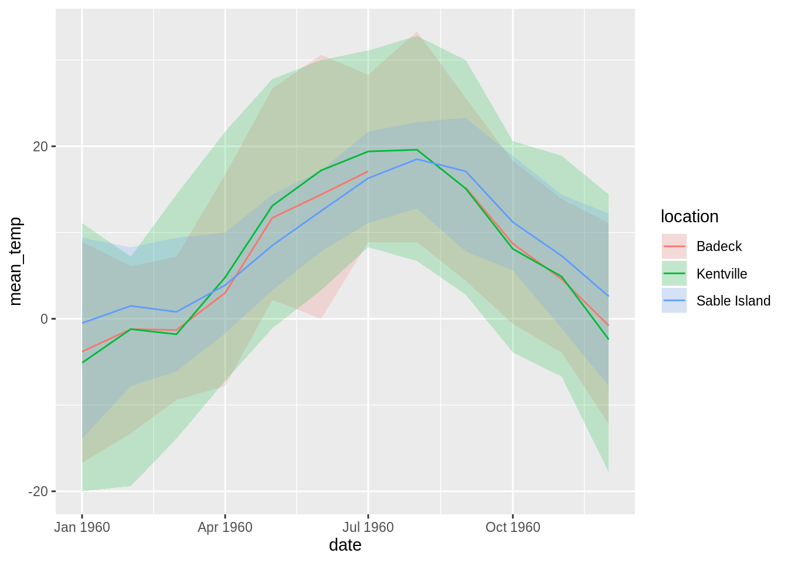

The mudata2 package is designed to be used as little as possible. That is, if you need use data that is currently in mudata format, the functions in this package are designed to let you spend as little time as possible reading, subsetting, and inspecting your data. The steps are generally as follows:
read_mudata()
summary(), print(), distinct_locations(), and distinct_params()
tbl_locations() and tbl_params()
select_params() or filter_params()
select_locations() or filter_locations()
tbl_data() or tbl_data_wide()
In this vignette we will use the ns_climate dataset within the mudata2 package, which is a collection of monthly climate observations from Nova Scotia (Canada), sourced from Environment Canada using the rclimateca package.
## A mudata object aligned along "date"
## distinct_datasets(): "ecclimate_monthly"
## distinct_locations(): "ANNAPOLIS ROYAL 6289", "BADDECK 6297" ... and 13 more
## distinct_params(): "dir_of_max_gust", "extr_max_temp" ... and 9 more
## src_tbls(): "data", "locations" ... and 3 more
##
## tbl_data() %>% head():
## # A tibble: 6 x 7
## dataset location param date value flag flag_text
## <chr> <chr> <chr> <date> <dbl> <chr> <chr>
## 1 ecclimate_month… SABLE ISLAND 64… mean_max_t… 1897-01-01 NA M Missing
## 2 ecclimate_month… SABLE ISLAND 64… mean_max_t… 1897-02-01 NA M Missing
## 3 ecclimate_month… SABLE ISLAND 64… mean_max_t… 1897-03-01 NA M Missing
## 4 ecclimate_month… SABLE ISLAND 64… mean_max_t… 1897-04-01 NA M Missing
## 5 ecclimate_month… SABLE ISLAND 64… mean_max_t… 1897-05-01 NA M Missing
## 6 ecclimate_month… SABLE ISLAND 64… mean_max_t… 1897-06-01 NA M MissingThe ns_climate object is already an object in R, but if it wasn’t, you would need to use read_mudata() to read it in. If you’re curious what a mudata object looks like on disk, you could try using write_mudata() to find out. I tend to prefer writing to a directory rather than a JSON or ZIP file, but you can take your pick.
# write to directory
write_mudata(ns_climate, "ns_climate.mudata")
# write to ZIP
write_mudata(ns_climate, "ns_climate.mudata.zip")
# write to JSON
write_mudata(ns_climate, "ns_climate.mudata.json")Then, you can read in the object using read_mudata():
The three main ways to quickly inspect a mudata object are print() and summary(). The print() function is what you get when you type the name of the object at the prompt, and gives a short summary of the object. The output suggests a couple of other ways to inspect the object, including distinct_locations(), which returns a character vector of location identifiers, and distinct_params(), which returns a character vector of parameter identifiers.
## A mudata object aligned along "date"
## distinct_datasets(): "ecclimate_monthly"
## distinct_locations(): "ANNAPOLIS ROYAL 6289", "BADDECK 6297" ... and 13 more
## distinct_params(): "dir_of_max_gust", "extr_max_temp" ... and 9 more
## src_tbls(): "data", "locations" ... and 3 more
##
## tbl_data() %>% head():
## # A tibble: 6 x 7
## dataset location param date value flag flag_text
## <chr> <chr> <chr> <date> <dbl> <chr> <chr>
## 1 ecclimate_month… SABLE ISLAND 64… mean_max_t… 1897-01-01 NA M Missing
## 2 ecclimate_month… SABLE ISLAND 64… mean_max_t… 1897-02-01 NA M Missing
## 3 ecclimate_month… SABLE ISLAND 64… mean_max_t… 1897-03-01 NA M Missing
## 4 ecclimate_month… SABLE ISLAND 64… mean_max_t… 1897-04-01 NA M Missing
## 5 ecclimate_month… SABLE ISLAND 64… mean_max_t… 1897-05-01 NA M Missing
## 6 ecclimate_month… SABLE ISLAND 64… mean_max_t… 1897-06-01 NA M MissingThe summary() function provides some numeric summaries by dataset, location, and parameter if the value column of the data table is numeric (if it isn’t, it provides counts instead).
## # A tibble: 137 x 7
## param location dataset mean_value sd_value n n_NA
## <chr> <chr> <chr> <dbl> <dbl> <int> <int>
## 1 dir_of_max_g… SABLE ISLAND 64… ecclimate_mon… 19.8 10.2 299 0
## 2 extr_max_temp ANNAPOLIS ROYAL… ecclimate_mon… 19.9 7.24 995 28
## 3 extr_max_temp BADDECK 6297 ecclimate_mon… 18.9 8.58 901 43
## 4 extr_max_temp BEAVERBANK 6301 ecclimate_mon… 17.2 10.4 24 17
## 5 extr_max_temp COLLEGEVILLE 63… ecclimate_mon… 20.3 8.54 1061 34
## 6 extr_max_temp DIGBY 6338 ecclimate_mon… 19.0 6.92 624 20
## 7 extr_max_temp KENTVILLE CDA 6… ecclimate_mon… 21.0 8.27 1002 3
## 8 extr_max_temp MAHONE BAY 6396 ecclimate_mon… 20.8 8.35 108 11
## 9 extr_max_temp MOUNT UNIACKE 6… ecclimate_mon… 19.7 8.21 972 30
## 10 extr_max_temp NAPPAN CDA 6414 ecclimate_mon… 19.3 8.04 1121 19
## # … with 127 more rowsYou can have a look at the embedded documentation using tbl_params(), and tbl_locations(), which contain any additional information about parameters and locations for which data are available. The identifiers (i.e., param and location columns) of these can be used to subset the object using select_*() functions; the tables themselves can be used to subset the object using the filter_*() functions.
## # A tibble: 11 x 4
## dataset param label unit
## <chr> <chr> <chr> <chr>
## 1 ecclimate_monthly mean_max_temp Mean Max Temp (C) C
## 2 ecclimate_monthly mean_min_temp Mean Min Temp (C) C
## 3 ecclimate_monthly mean_temp Mean Temp (C) C
## 4 ecclimate_monthly extr_max_temp Extr Max Temp (C) C
## 5 ecclimate_monthly extr_min_temp Extr Min Temp (C) C
## 6 ecclimate_monthly total_rain Total Rain (mm) mm
## 7 ecclimate_monthly total_snow Total Snow (cm) cm
## 8 ecclimate_monthly total_precip Total Precip (mm) mm
## 9 ecclimate_monthly snow_grnd_last_day Snow Grnd Last Day (cm) cm
## 10 ecclimate_monthly dir_of_max_gust Dir of Max Gust (10's deg) 10's deg
## 11 ecclimate_monthly spd_of_max_gust Spd of Max Gust (km/h) km/h## # A tibble: 15 x 19
## dataset location name province climate_id station_id wmo_id tc_id latitude
## <chr> <chr> <chr> <chr> <chr> <int> <int> <chr> <dbl>
## 1 ecclim… ANNAPOL… ANNA… NOVA SC… 8200100 6289 NA "" 44.8
## 2 ecclim… BADDECK… BADD… NOVA SC… 8200300 6297 NA "" 46.1
## 3 ecclim… BEAVERB… BEAV… NOVA SC… 8200550 6301 NA "" 44.9
## 4 ecclim… COLLEGE… COLL… NOVA SC… 8201000 6329 NA "" 45.5
## 5 ecclim… DIGBY 6… DIGBY NOVA SC… 8201600 6338 NA "" 44.6
## 6 ecclim… KENTVIL… KENT… NOVA SC… 8202800 6375 NA "" 45.1
## 7 ecclim… MAHONE … MAHO… NOVA SC… 8203300 6396 NA "" 44.5
## 8 ecclim… MOUNT U… MOUN… NOVA SC… 8203600 6413 NA "" 44.9
## 9 ecclim… NAPPAN … NAPP… NOVA SC… 8203700 6414 NA "" 45.8
## 10 ecclim… PARRSBO… PARR… NOVA SC… 8204400 6428 NA "" 45.4
## 11 ecclim… PORT HA… PORT… NOVA SC… 8204480 6441 NA "" 45.6
## 12 ecclim… SABLE I… SABL… NOVA SC… 8204700 6454 71600 "ESA" 43.9
## 13 ecclim… ST MARG… ST M… NOVA SC… 8204800 6456 NA "" 44.7
## 14 ecclim… SPRINGF… SPRI… NOVA SC… 8205200 6473 NA "" 44.7
## 15 ecclim… UPPER S… UPPE… NOVA SC… 8206200 6495 NA "" 45.2
## # … with 10 more variables: longitude <dbl>, elevation <dbl>, first_year <int>,
## # last_year <int>, hly_first_year <int>, hly_last_year <int>,
## # dly_first_year <int>, dly_last_year <int>, mly_first_year <int>,
## # mly_last_year <int>You can subset mudata objects using select_params() and select_locations(), which use dplyr-like selection syntax to quickly subset mudata objects using the identifiers from distinct_locations() and distinct_params() (respectively).
## [1] "dir_of_max_gust" "extr_max_temp" "extr_min_temp"
## [4] "mean_max_temp" "mean_min_temp" "mean_temp"
## [7] "snow_grnd_last_day" "spd_of_max_gust" "total_precip"
## [10] "total_rain" "total_snow"## A mudata object aligned along "date"
## distinct_datasets(): "ecclimate_monthly"
## distinct_locations(): "ANNAPOLIS ROYAL 6289", "BADDECK 6297" ... and 13 more
## distinct_params(): "mean_temp", "total_precip"
## src_tbls(): "data", "locations" ... and 3 more
##
## tbl_data() %>% head():
## # A tibble: 6 x 7
## dataset location param date value flag flag_text
## <chr> <chr> <chr> <date> <dbl> <chr> <chr>
## 1 ecclimate_monthly SABLE ISLAND 6454 mean_temp 1897-01-01 NA M Missing
## 2 ecclimate_monthly SABLE ISLAND 6454 mean_temp 1897-02-01 NA M Missing
## 3 ecclimate_monthly SABLE ISLAND 6454 mean_temp 1897-03-01 NA M Missing
## 4 ecclimate_monthly SABLE ISLAND 6454 mean_temp 1897-04-01 NA M Missing
## 5 ecclimate_monthly SABLE ISLAND 6454 mean_temp 1897-05-01 NA M Missing
## 6 ecclimate_monthly SABLE ISLAND 6454 mean_temp 1897-06-01 NA M MissingYou can also use the dplyr select helpers to select related params/locations…
## A mudata object aligned along "date"
## distinct_datasets(): "ecclimate_monthly"
## distinct_locations(): "ANNAPOLIS ROYAL 6289", "BADDECK 6297" ... and 13 more
## distinct_params(): "extr_max_temp", "extr_min_temp" ... and 3 more
## src_tbls(): "data", "locations" ... and 3 more
##
## tbl_data() %>% head():
## # A tibble: 6 x 7
## dataset location param date value flag flag_text
## <chr> <chr> <chr> <date> <dbl> <chr> <chr>
## 1 ecclimate_month… SABLE ISLAND 64… mean_max_t… 1897-01-01 NA M Missing
## 2 ecclimate_month… SABLE ISLAND 64… mean_max_t… 1897-02-01 NA M Missing
## 3 ecclimate_month… SABLE ISLAND 64… mean_max_t… 1897-03-01 NA M Missing
## 4 ecclimate_month… SABLE ISLAND 64… mean_max_t… 1897-04-01 NA M Missing
## 5 ecclimate_month… SABLE ISLAND 64… mean_max_t… 1897-05-01 NA M Missing
## 6 ecclimate_month… SABLE ISLAND 64… mean_max_t… 1897-06-01 NA M Missing…and rename params/locations on the fly.
## A mudata object aligned along "date"
## distinct_datasets(): "ecclimate_monthly"
## distinct_locations(): "Kentville"
## distinct_params(): "extr_max_temp", "extr_min_temp" ... and 7 more
## src_tbls(): "data", "locations" ... and 3 more
##
## tbl_data() %>% head():
## # A tibble: 6 x 7
## dataset location param date value flag flag_text
## <chr> <chr> <chr> <date> <dbl> <chr> <chr>
## 1 ecclimate_monthly Kentville mean_max_temp 1913-01-01 NA M Missing
## 2 ecclimate_monthly Kentville mean_max_temp 1913-02-01 NA M Missing
## 3 ecclimate_monthly Kentville mean_max_temp 1913-03-01 NA M Missing
## 4 ecclimate_monthly Kentville mean_max_temp 1913-04-01 9.7 <NA> <NA>
## 5 ecclimate_monthly Kentville mean_max_temp 1913-05-01 12.5 <NA> <NA>
## 6 ecclimate_monthly Kentville mean_max_temp 1913-06-01 19.9 <NA> <NA>To select params/locations based on the tbl_params() and tbl_locations() tables, you can use the filter_*() functions (note that last_year is a column in tbl_locations(), and unit is a column in tbl_params()):
# only use locations whose last data point was after 2000
ns_climate %>%
filter_locations(last_year > 2000)## A mudata object aligned along "date"
## distinct_datasets(): "ecclimate_monthly"
## distinct_locations(): "ANNAPOLIS ROYAL 6289", "COLLEGEVILLE 6329" ... and 7 more
## distinct_params(): "dir_of_max_gust", "extr_max_temp" ... and 9 more
## src_tbls(): "data", "locations" ... and 3 more
##
## tbl_data() %>% head():
## # A tibble: 6 x 7
## dataset location param date value flag flag_text
## <chr> <chr> <chr> <date> <dbl> <chr> <chr>
## 1 ecclimate_month… SABLE ISLAND 64… mean_max_t… 1897-01-01 NA M Missing
## 2 ecclimate_month… SABLE ISLAND 64… mean_max_t… 1897-02-01 NA M Missing
## 3 ecclimate_month… SABLE ISLAND 64… mean_max_t… 1897-03-01 NA M Missing
## 4 ecclimate_month… SABLE ISLAND 64… mean_max_t… 1897-04-01 NA M Missing
## 5 ecclimate_month… SABLE ISLAND 64… mean_max_t… 1897-05-01 NA M Missing
## 6 ecclimate_month… SABLE ISLAND 64… mean_max_t… 1897-06-01 NA M Missing## A mudata object aligned along "date"
## distinct_datasets(): "ecclimate_monthly"
## distinct_locations(): "ANNAPOLIS ROYAL 6289", "BADDECK 6297" ... and 13 more
## distinct_params(): "total_precip", "total_rain"
## src_tbls(): "data", "locations" ... and 3 more
##
## tbl_data() %>% head():
## # A tibble: 6 x 7
## dataset location param date value flag flag_text
## <chr> <chr> <chr> <date> <dbl> <chr> <chr>
## 1 ecclimate_monthly SABLE ISLAND 6454 total_ra… 1891-01-01 NA M Missing
## 2 ecclimate_monthly SABLE ISLAND 6454 total_ra… 1891-02-01 40.4 <NA> <NA>
## 3 ecclimate_monthly SABLE ISLAND 6454 total_ra… 1891-03-01 32 <NA> <NA>
## 4 ecclimate_monthly SABLE ISLAND 6454 total_ra… 1891-04-01 132. <NA> <NA>
## 5 ecclimate_monthly SABLE ISLAND 6454 total_ra… 1891-05-01 44.7 <NA> <NA>
## 6 ecclimate_monthly SABLE ISLAND 6454 total_ra… 1891-06-01 106. <NA> <NA>Similarly, we can subset parameters, locations, and the data table all at once using filter_data().
##
## Attaching package: 'lubridate'## The following object is masked from 'package:base':
##
## date## A mudata object aligned along "date"
## distinct_datasets(): "ecclimate_monthly"
## distinct_locations(): "ANNAPOLIS ROYAL 6289", "BADDECK 6297" ... and 13 more
## distinct_params(): "dir_of_max_gust", "extr_max_temp" ... and 9 more
## src_tbls(): "data", "locations" ... and 3 more
##
## tbl_data() %>% head():
## # A tibble: 6 x 7
## dataset location param date value flag flag_text
## <chr> <chr> <chr> <date> <dbl> <chr> <chr>
## 1 ecclimate_month… SABLE ISLAND 64… mean_max_t… 1897-06-01 NA M Missing
## 2 ecclimate_month… SABLE ISLAND 64… mean_max_t… 1898-06-01 13.4 <NA> <NA>
## 3 ecclimate_month… SABLE ISLAND 64… mean_max_t… 1899-06-01 14.4 <NA> <NA>
## 4 ecclimate_month… SABLE ISLAND 64… mean_max_t… 1900-06-01 14.6 <NA> <NA>
## 5 ecclimate_month… SABLE ISLAND 64… mean_max_t… 1901-06-01 15.3 <NA> <NA>
## 6 ecclimate_month… SABLE ISLAND 64… mean_max_t… 1902-06-01 13.6 <NA> <NA>The data is stored in the data table (i.e., tbl_data()) in parameter-long form (that is, one row per measurement rather than one row per observation). This has advantages in that information about each measurement can be stored next to the value (e.g., standard deviation, notes, etc.), however it is rarely the form required for analysis. To extract data in parameter-long form, you can use tbl_data():
## # A tibble: 115,541 x 7
## dataset location param date value flag flag_text
## <chr> <chr> <chr> <date> <dbl> <chr> <chr>
## 1 ecclimate_month… SABLE ISLAND 6… mean_max_t… 1897-01-01 NA M Missing
## 2 ecclimate_month… SABLE ISLAND 6… mean_max_t… 1897-02-01 NA M Missing
## 3 ecclimate_month… SABLE ISLAND 6… mean_max_t… 1897-03-01 NA M Missing
## 4 ecclimate_month… SABLE ISLAND 6… mean_max_t… 1897-04-01 NA M Missing
## 5 ecclimate_month… SABLE ISLAND 6… mean_max_t… 1897-05-01 NA M Missing
## 6 ecclimate_month… SABLE ISLAND 6… mean_max_t… 1897-06-01 NA M Missing
## 7 ecclimate_month… SABLE ISLAND 6… mean_max_t… 1897-07-01 NA M Missing
## 8 ecclimate_month… SABLE ISLAND 6… mean_max_t… 1897-08-01 NA M Missing
## 9 ecclimate_month… SABLE ISLAND 6… mean_max_t… 1897-09-01 NA M Missing
## 10 ecclimate_month… SABLE ISLAND 6… mean_max_t… 1897-10-01 12.2 <NA> <NA>
## # … with 115,531 more rowsTo extract data in a more standard parameter-wide form, you can use tbl_data_wide():
## # A tibble: 14,311 x 14
## dataset location date dir_of_max_gust extr_max_temp extr_min_temp
## <chr> <chr> <date> <dbl> <dbl> <dbl>
## 1 ecclim… ANNAPOL… 1914-01-01 NA NA NA
## 2 ecclim… ANNAPOL… 1914-02-01 NA NA NA
## 3 ecclim… ANNAPOL… 1914-03-01 NA NA NA
## 4 ecclim… ANNAPOL… 1914-04-01 NA 19.4 -11.1
## 5 ecclim… ANNAPOL… 1914-05-01 NA 30 -3.9
## 6 ecclim… ANNAPOL… 1914-06-01 NA 26.7 -1.7
## 7 ecclim… ANNAPOL… 1914-07-01 NA 30 3.9
## 8 ecclim… ANNAPOL… 1914-08-01 NA NA NA
## 9 ecclim… ANNAPOL… 1914-09-01 NA NA NA
## 10 ecclim… ANNAPOL… 1914-10-01 NA NA NA
## # … with 14,301 more rows, and 8 more variables: mean_max_temp <dbl>,
## # mean_min_temp <dbl>, mean_temp <dbl>, snow_grnd_last_day <dbl>,
## # spd_of_max_gust <dbl>, total_precip <dbl>, total_rain <dbl>,
## # total_snow <dbl>The tbl_data_wide() function isn’t limited to parameter-wide data - data can be anything-wide (Edzer Pebesma has a great discussion on this). Using tbl_data_wide() is identical to using tbl_data() and tidyr::spread(), with context-specific defaults.
ns_climate %>%
select_params(mean_temp) %>%
filter_data(year(date) == 1960) %>%
tbl_data_wide(key = location)## # A tibble: 12 x 16
## dataset param date `BADDECK 6297` `COLLEGEVILLE 6… `DIGBY 6338`
## <chr> <chr> <date> <dbl> <dbl> <dbl>
## 1 ecclim… mean… 1960-01-01 -3.8 -6 -2.6
## 2 ecclim… mean… 1960-02-01 -1.2 -2.5 0.3
## 3 ecclim… mean… 1960-03-01 -1.3 -3.1 0
## 4 ecclim… mean… 1960-04-01 3 2.1 6.5
## 5 ecclim… mean… 1960-05-01 11.7 10.9 12.8
## 6 ecclim… mean… 1960-06-01 14.4 14.7 16.4
## 7 ecclim… mean… 1960-07-01 17.1 18 18.9
## 8 ecclim… mean… 1960-08-01 NA 18.5 18.6
## 9 ecclim… mean… 1960-09-01 15.2 14 14.8
## 10 ecclim… mean… 1960-10-01 8.7 6.9 9.1
## 11 ecclim… mean… 1960-11-01 4.6 3.2 6.7
## 12 ecclim… mean… 1960-12-01 -0.8 -3.5 -0.4
## # … with 10 more variables: `KENTVILLE CDA 6375` <dbl>, `MAHONE BAY
## # 6396` <dbl>, `MOUNT UNIACKE 6413` <dbl>, `NAPPAN CDA 6414` <dbl>,
## # `PARRSBORO 6428` <dbl>, `PORT HASTINGS 6441` <dbl>, `SABLE ISLAND
## # 6454` <dbl>, `SPRINGFIELD 6473` <dbl>, `ST MARGARET'S BAY 6456` <dbl>,
## # `UPPER STEWIACKE 6495` <dbl>Using the pipe (%>%), we can string all the steps together concisely:
temp_1960 <- ns_climate %>%
# pick parameters
select_params(contains("temp")) %>%
# pick locations
select_locations(
`Sable Island` = starts_with("SABLE"),
`Kentville` = starts_with("KENT"),
`Badeck` = starts_with("BADD")
) %>%
# filter data table
filter_data(year(date) == 1960) %>%
# extract data in wide format
tbl_data_wide()
temp_1960## # A tibble: 36 x 8
## dataset location date extr_max_temp extr_min_temp mean_max_temp
## <chr> <chr> <date> <dbl> <dbl> <dbl>
## 1 ecclim… Badeck 1960-01-01 8.9 -16.7 -0.6
## 2 ecclim… Badeck 1960-02-01 6.1 -13.3 1.7
## 3 ecclim… Badeck 1960-03-01 7.2 -9.4 0.9
## 4 ecclim… Badeck 1960-04-01 16.7 -7.8 6.1
## 5 ecclim… Badeck 1960-05-01 26.7 2.2 17.2
## 6 ecclim… Badeck 1960-06-01 30.6 0 19.6
## 7 ecclim… Badeck 1960-07-01 28.3 8.9 22.6
## 8 ecclim… Badeck 1960-08-01 33.3 8.9 24.3
## 9 ecclim… Badeck 1960-09-01 25.6 4.4 19.8
## 10 ecclim… Badeck 1960-10-01 18.3 -0.6 12.3
## # … with 26 more rows, and 2 more variables: mean_min_temp <dbl>,
## # mean_temp <dbl>We can then use this data with ggplot2 to lead us to the conclusion that three locations in the same province had more or less the same monthly temperature characteristics in 1960.
library(ggplot2)
ggplot(
temp_1960,
aes(
x = date,
y = mean_temp,
ymin = extr_min_temp,
ymax = extr_max_temp,
col = location,
fill = location
)
) +
geom_ribbon(alpha = 0.2, col = NA) +
geom_line()